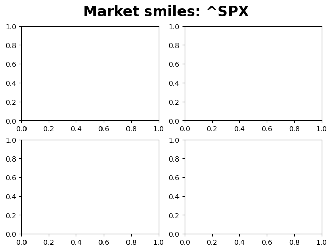

[1]:
from hestonpy.models.heston import Heston
from hestonpy.models.calibration.volatilitySmile import VolatilitySmile, fontdict
from hestonpy.option.data import get_options_data, filter_data_for_maturity
import matplotlib.pyplot as plt
import matplotlib.font_manager as font_manager
font_legend = font_manager.FontProperties(
style='normal',
size=10,
)
fontdict_title = {
'fontsize': 20,
'fontweight': 'bold'
}
from datetime import datetime
import numpy as np
Calibration of Heston models on market data#
We will calibrate our models on S&P smiles. You can also try with Apple, but there is less liquidity on the market, so less available maturities. Some parameters,
[2]:
symbol = '^SPX'
all_market_data, spot, maturities = get_options_data(symbol)
if symbol == '^SPX':
considered_maturities = [maturities[7], maturities[14], maturities[28], maturities[38]]
else:
considered_maturities = [maturities[1], maturities[3], maturities[8], maturities[14]]
r = 0.00
params = {
"vol_initial": 0.06,
"kappa": 1.25,
"theta": 0.06,
"drift_emm": 0.00,
"sigma": 0.6,
"rho": -0.8,
}
For each maturity/smile we filter the data (based on bid-ask spread, the moneyness etc.), then we calibrate with a local optimiser to initialise our global optimiser.
[3]:
fig, axs = plt.subplots(2, 2, layout="constrained")
fig.suptitle(f'Market smiles: {symbol}', **fontdict_title)
############################################################
##### Absolute
############################################################
for maturity, ax in zip(considered_maturities, axs.flatten()):
print("="*80)
print(maturity)
print("="*80,"\n")
####################################
### Getting and filtering data
####################################
full_market_data = filter_data_for_maturity(all_market_data, maturity)
time_to_maturity = full_market_data['Time to Maturity'].iloc[0]
strikes = full_market_data['Strike'].values
bid_prices = full_market_data["Bid"].values
ask_prices = full_market_data['Ask'].values
market_ivs = full_market_data['Implied Volatility'].values
market_prices = full_market_data['Call Price'].values
marketVolatilitySmile = VolatilitySmile(
strikes=strikes,
time_to_maturity=time_to_maturity,
atm=spot,
market_ivs=market_ivs,
r=r
)
market_data = marketVolatilitySmile.filters(full_market_data, select_mid_ivs=True)
####################################
### Calibration
####################################
heston = Heston(spot=spot, r=r, **params)
initial_params = marketVolatilitySmile.calibration(
price_function=heston.call_price,
guess_correlation_sign='negative',
initial_guess=[params['kappa'], params['theta'], params['sigma'], params['rho']],
speed='local',
)
# Absolute calibration
calibrated_params = marketVolatilitySmile.calibration(
relative_errors=False,
price_function=heston.call_price,
guess_correlation_sign='negative',
initial_guess=[initial_params['kappa'], initial_params['theta'], initial_params['sigma'], initial_params['rho']],
speed='global',
power='mse'
)
calibrated_prices = heston.call_price(
strike=marketVolatilitySmile.strikes, time_to_maturity=time_to_maturity, **calibrated_params
)
print(marketVolatilitySmile.evaluate_calibration(calibrated_prices, 'price'))
calibrated_ivs = marketVolatilitySmile.compute_smile(prices=calibrated_prices)
print(marketVolatilitySmile.evaluate_calibration(calibrated_ivs, 'iv'))
# Relative calibration
calibrated_params_relative = marketVolatilitySmile.calibration(
relative_errors=True,
price_function=heston.call_price,
guess_correlation_sign='negative',
initial_guess=[initial_params['kappa'], initial_params['theta'], initial_params['sigma'], initial_params['rho']],
speed='global',
power='mse'
)
calibrated_prices_relative = heston.call_price(
strike=marketVolatilitySmile.strikes, time_to_maturity=time_to_maturity, **calibrated_params_relative
)
print(marketVolatilitySmile.evaluate_calibration(calibrated_prices_relative, 'price'))
calibrated_ivs_relative = marketVolatilitySmile.compute_smile(prices=calibrated_prices_relative)
print(marketVolatilitySmile.evaluate_calibration(calibrated_ivs_relative, 'iv'))
# Some plots
ask_ivs = market_data['Ask ivs'].values
bid_ivs = market_data['Bid ivs'].values
forward = marketVolatilitySmile.atm * np.exp(marketVolatilitySmile.r * marketVolatilitySmile.time_to_maturity)
if ax == axs.flatten()[-2]:
ax.axvline(1, linestyle="--", color="gray", label="ATM")
ax.plot(marketVolatilitySmile.strikes / forward, calibrated_ivs, label="absolute calibration", marker='+', color='blue', linestyle="dotted", markersize=4)
ax.plot(marketVolatilitySmile.strikes / forward, calibrated_ivs_relative, label="relative calibration", marker='+', color='green', linestyle="dotted", markersize=4)
ax.scatter(marketVolatilitySmile.strikes / forward, marketVolatilitySmile.market_ivs, label="mid", marker='o', color='red', s=20)
ax.scatter(marketVolatilitySmile.strikes / forward, bid_ivs, label="bid", marker=6, color='black', s=20)
ax.scatter(marketVolatilitySmile.strikes / forward, ask_ivs, label="ask", marker=7, color='gray', s=20)
ax.legend(loc='upper right', prop=font_legend, ncol=2, alignment='left')
else:
ax.axvline(1, linestyle="--", color="gray")
ax.plot(marketVolatilitySmile.strikes / forward, calibrated_ivs, marker='+', color='blue', linestyle="dotted", markersize=4)
ax.plot(marketVolatilitySmile.strikes / forward, calibrated_ivs_relative, marker='+', color='green', linestyle="dotted", markersize=4)
ax.scatter(marketVolatilitySmile.strikes / forward, marketVolatilitySmile.market_ivs, marker='o', color='red', s=20)
ax.scatter(marketVolatilitySmile.strikes / forward, bid_ivs, marker=6, color='black', s=20)
ax.scatter(marketVolatilitySmile.strikes / forward, ask_ivs, marker=7, color='gray', s=20)
ax.set_xlabel("Moneyness [%]", fontdict=fontdict)
ax.set_ylabel("Implied Volatility [%]", fontdict=fontdict)
date = datetime.strptime(maturity, '%Y-%m-%d').date().strftime("%d-%B-%y")
title = f"{date}: {marketVolatilitySmile.time_to_maturity * 252 / 5:.1f} semaines"
ax.set_title(title, fontdict=fontdict)
ax.grid(visible=True, which="major", linestyle="--", dashes=(5, 10), color="gray", linewidth=0.5, alpha=0.8)
plt.show()
================================================================================
2025-04-11
================================================================================
---------------------------------------------------------------------------
KeyboardInterrupt Traceback (most recent call last)
Cell In[3], line 38
34 ####################################
35 ### Calibration
36 ####################################
37 heston = Heston(spot=spot, r=r, **params)
---> 38 initial_params = marketVolatilitySmile.calibration(
39 price_function=heston.call_price,
40 guess_correlation_sign='negative',
41 initial_guess=[params['kappa'], params['theta'], params['sigma'], params['rho']],
42 speed='local',
43 )
45 # Absolute calibration
46 calibrated_params = marketVolatilitySmile.calibration(
47 relative_errors=False,
48 price_function=heston.call_price,
(...)
52 power='mse'
53 )
File ~/Documents/packages/hestonpy/src/hestonpy/models/calibration/volatilitySmile.py:293, in VolatilitySmile.calibration(self, price_function, initial_guess, guess_correlation_sign, speed, power, method, weights, relative_errors)
291 with warnings.catch_warnings():
292 warnings.simplefilter("ignore", category=RuntimeWarning)
--> 293 result = minimize(cost_function, initial_guess, **minimizer_kwargs)
295 ########################################
296 #### Global calibration scheme
297 ########################################
298 elif speed == "global":
File ~/Documents/packages/hestonpy/.venv/lib/python3.10/site-packages/scipy/optimize/_minimize.py:738, in minimize(fun, x0, args, method, jac, hess, hessp, bounds, constraints, tol, callback, options)
735 res = _minimize_newtoncg(fun, x0, args, jac, hess, hessp, callback,
736 **options)
737 elif meth == 'l-bfgs-b':
--> 738 res = _minimize_lbfgsb(fun, x0, args, jac, bounds,
739 callback=callback, **options)
740 elif meth == 'tnc':
741 res = _minimize_tnc(fun, x0, args, jac, bounds, callback=callback,
742 **options)
File ~/Documents/packages/hestonpy/.venv/lib/python3.10/site-packages/scipy/optimize/_lbfgsb_py.py:441, in _minimize_lbfgsb(fun, x0, args, jac, bounds, disp, maxcor, ftol, gtol, eps, maxfun, maxiter, iprint, callback, maxls, finite_diff_rel_step, **unknown_options)
433 _lbfgsb.setulb(m, x, low_bnd, upper_bnd, nbd, f, g, factr, pgtol, wa,
434 iwa, task, lsave, isave, dsave, maxls, ln_task)
436 if task[0] == 3:
437 # The minimization routine wants f and g at the current x.
438 # Note that interruptions due to maxfun are postponed
439 # until the completion of the current minimization iteration.
440 # Overwrite f and g:
--> 441 f, g = func_and_grad(x)
442 elif task[0] == 1:
443 # new iteration
444 n_iterations += 1
File ~/Documents/packages/hestonpy/.venv/lib/python3.10/site-packages/scipy/optimize/_differentiable_functions.py:345, in ScalarFunction.fun_and_grad(self, x)
343 self._update_x(x)
344 self._update_fun()
--> 345 self._update_grad()
346 return self.f, self.g
File ~/Documents/packages/hestonpy/.venv/lib/python3.10/site-packages/scipy/optimize/_differentiable_functions.py:307, in ScalarFunction._update_grad(self)
305 if self._orig_grad in FD_METHODS:
306 self._update_fun()
--> 307 self.g = self._wrapped_grad(self.x, f0=self.f)
308 self.g_updated = True
File ~/Documents/packages/hestonpy/.venv/lib/python3.10/site-packages/scipy/optimize/_differentiable_functions.py:48, in _wrapper_grad.<locals>.wrapped1(x, f0)
46 def wrapped1(x, f0=None):
47 ncalls[0] += 1
---> 48 return approx_derivative(
49 fun, x, f0=f0, **finite_diff_options
50 )
File ~/Documents/packages/hestonpy/.venv/lib/python3.10/site-packages/scipy/optimize/_numdiff.py:523, in approx_derivative(fun, x0, method, rel_step, abs_step, f0, bounds, sparsity, as_linear_operator, args, kwargs)
520 use_one_sided = False
522 if sparsity is None:
--> 523 return _dense_difference(fun_wrapped, x0, f0, h,
524 use_one_sided, method)
525 else:
526 if not issparse(sparsity) and len(sparsity) == 2:
File ~/Documents/packages/hestonpy/.venv/lib/python3.10/site-packages/scipy/optimize/_numdiff.py:596, in _dense_difference(fun, x0, f0, h, use_one_sided, method)
594 x1[i] += h[i]
595 dx = x1[i] - x0[i] # Recompute dx as exactly representable number.
--> 596 df = fun(x1) - f0
597 elif method == '3-point' and use_one_sided[i]:
598 x1[i] += h[i]
File ~/Documents/packages/hestonpy/.venv/lib/python3.10/site-packages/scipy/optimize/_numdiff.py:474, in approx_derivative.<locals>.fun_wrapped(x)
471 if xp.isdtype(x.dtype, "real floating"):
472 x = xp.astype(x, x0.dtype)
--> 474 f = np.atleast_1d(fun(x, *args, **kwargs))
475 if f.ndim > 1:
476 raise RuntimeError("`fun` return value has "
477 "more than 1 dimension.")
File ~/Documents/packages/hestonpy/.venv/lib/python3.10/site-packages/scipy/optimize/_differentiable_functions.py:21, in _wrapper_fun.<locals>.wrapped(x)
17 ncalls[0] += 1
18 # Send a copy because the user may overwrite it.
19 # Overwriting results in undefined behaviour because
20 # fun(self.x) will change self.x, with the two no longer linked.
---> 21 fx = fun(np.copy(x), *args)
22 # Make sure the function returns a true scalar
23 if not np.isscalar(fx):
File ~/Documents/packages/hestonpy/src/hestonpy/models/calibration/volatilitySmile.py:270, in VolatilitySmile.calibration.<locals>.cost_function(params)
268 def cost_function(params):
269 function_params = _get_parameters(model_type, params)
--> 270 model_prices = price_function(
271 **function_params,
272 v=vol_initial,
273 strike=self.strikes,
274 time_to_maturity=self.time_to_maturity,
275 s=self.atm,
276 )
278 return difference_function(self.market_prices, model_prices)
File ~/Documents/packages/hestonpy/src/hestonpy/models/heston.py:353, in Heston.call_price(self, strike, time_to_maturity, s, v, **kwargs)
331 def call_price(
332 self,
333 strike: np.array,
(...)
337 **kwargs
338 ):
339 """
340 Price a European call option using the Carr-Madan method.
341
(...)
350 :rtype: float
351 """
--> 353 price = self.carr_madan_price(
354 s=s,
355 v=v,
356 strike=strike,
357 time_to_maturity=time_to_maturity,
358 **kwargs
359 )
360 return price
File ~/Documents/packages/hestonpy/src/hestonpy/models/heston.py:514, in Heston.carr_madan_price(self, strike, time_to_maturity, s, v, error_boolean, **kwargs)
505 price_hat = (
506 lambda u: np.exp(-self.r * time_to_maturity)
507 / (alpha**2 + alpha - u**2 + u * (2 * alpha + 1) * 1j)
508 * self.characteristic(j=2, **kwargs)(x, v, time_to_maturity, u - (alpha + 1) * 1j)
509 )
511 integrand = lambda u: np.exp(-u * np.log(strike) * 1j) * price_hat(u)
513 price = np.real(
--> 514 np.exp(-alpha * np.log(strike)) / np.pi * quad_vec(f=integrand, a=0, b=1000)[0]
515 )
517 if error_boolean:
518 error = (
519 np.exp(-alpha * np.log(strike)) / np.pi * quad_vec(f=integrand, a=0, b=1000)[1]
520 )
File ~/Documents/packages/hestonpy/.venv/lib/python3.10/site-packages/scipy/integrate/_quad_vec.py:412, in quad_vec(f, a, b, epsabs, epsrel, norm, cache_size, limit, workers, points, quadrature, full_output, args)
409 err_sum += -neg_old_err
411 # Subdivide intervals
--> 412 for parts in mapwrapper(_subdivide_interval, to_process):
413 dint, derr, dround_err, subint, dneval = parts
414 neval += dneval
File ~/Documents/packages/hestonpy/.venv/lib/python3.10/site-packages/scipy/integrate/_quad_vec.py:472, in _subdivide_interval(args)
470 s1, err1, round1 = _quadrature(a, c, f, norm_func)
471 dneval = _quadrature.num_eval
--> 472 s2, err2, round2 = _quadrature(c, b, f, norm_func)
473 dneval += _quadrature.num_eval
474 if old_int is None:
File ~/Documents/packages/hestonpy/.venv/lib/python3.10/site-packages/scipy/integrate/_quad_vec.py:626, in _quadrature_gk21(a, b, f, norm_func)
603 # 21-point weights
604 v = (0.011694638867371874278064396062192,
605 0.032558162307964727478818972459390,
606 0.054755896574351996031381300244580,
(...)
623 0.032558162307964727478818972459390,
624 0.011694638867371874278064396062192)
--> 626 return _quadrature_gk(a, b, f, norm_func, x, w, v)
File ~/Documents/packages/hestonpy/.venv/lib/python3.10/site-packages/scipy/integrate/_quad_vec.py:535, in _quadrature_gk(a, b, f, norm_func, x, w, v)
533 s_k += vv * ff
534 # \int |f(x)|
--> 535 s_k_abs += vv * abs(ff)
537 # Gauss
538 s_g = 0.0
KeyboardInterrupt:
